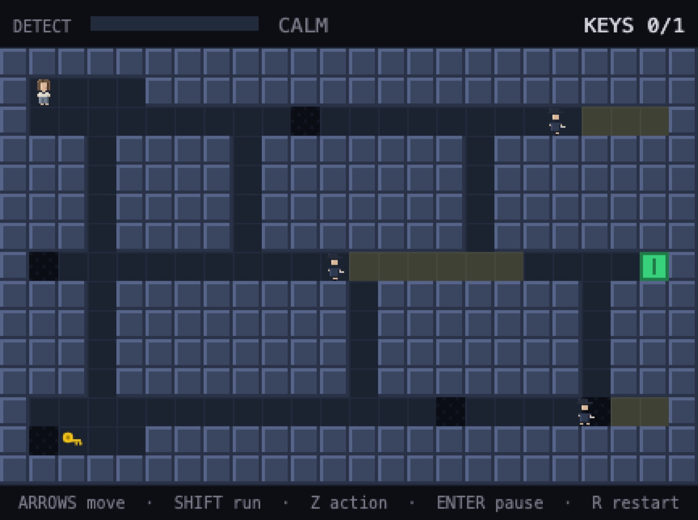
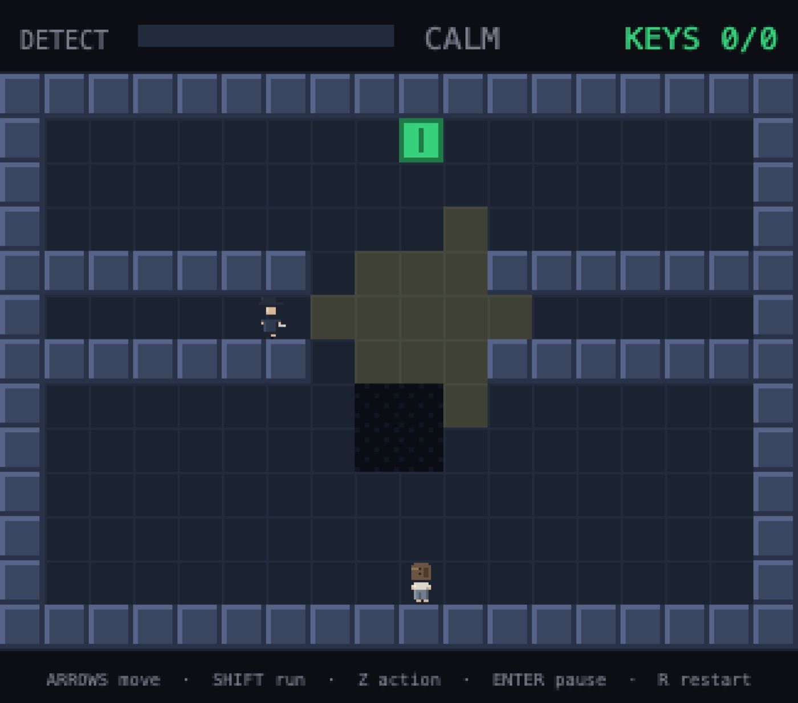
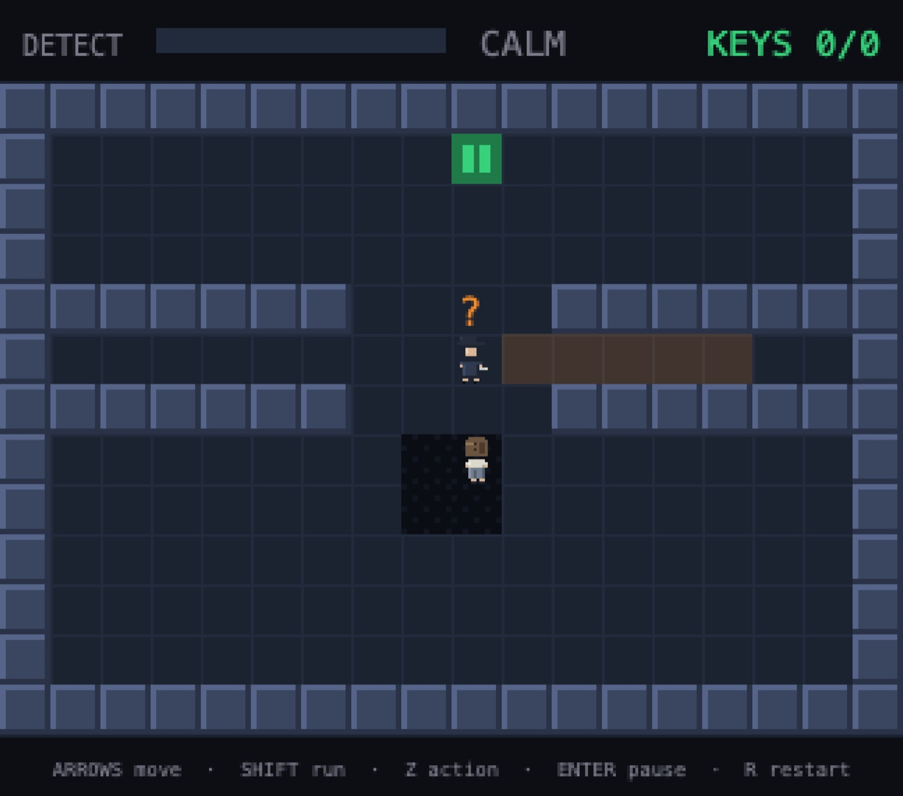
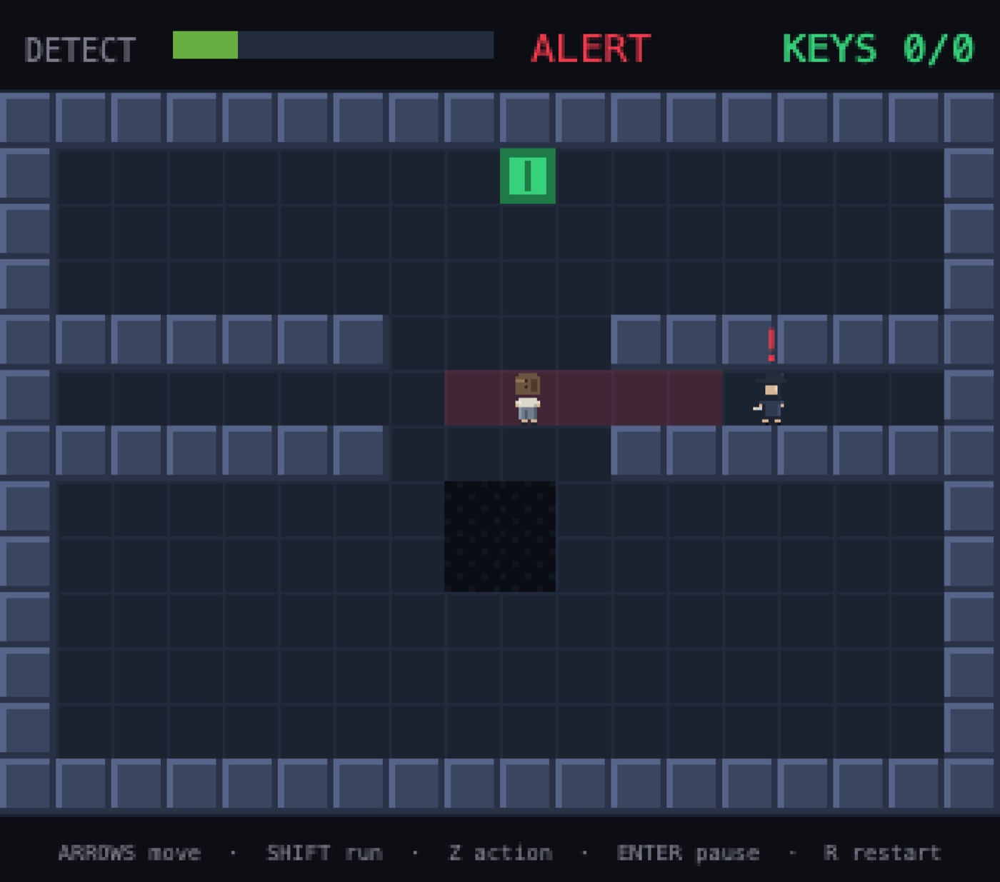
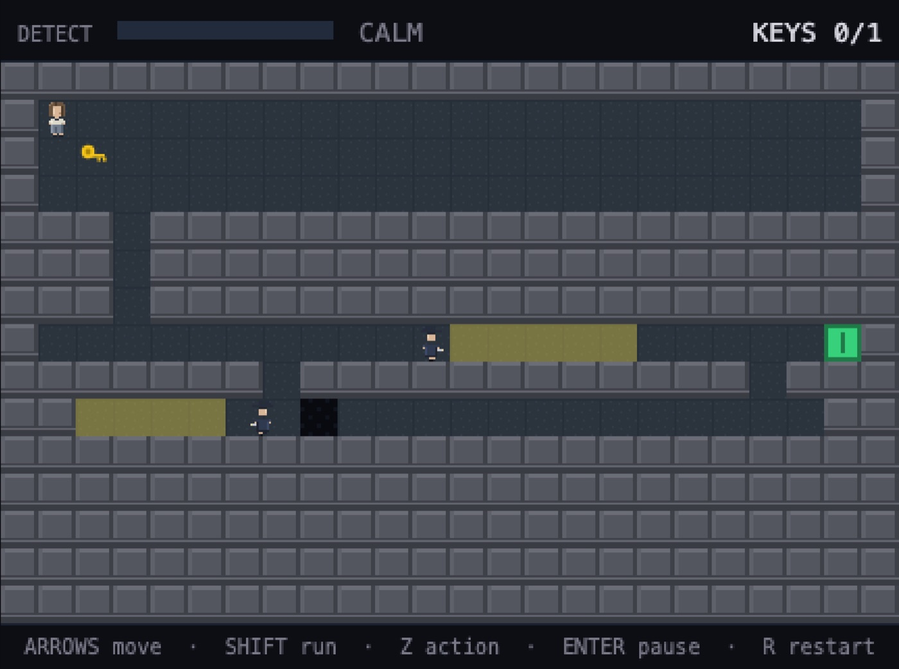
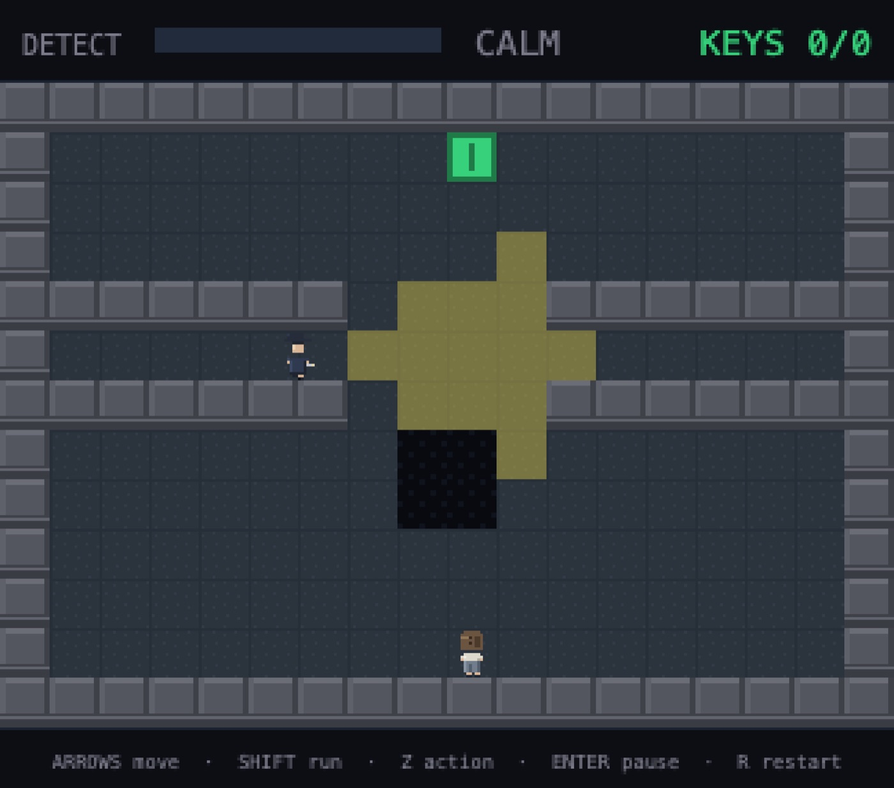
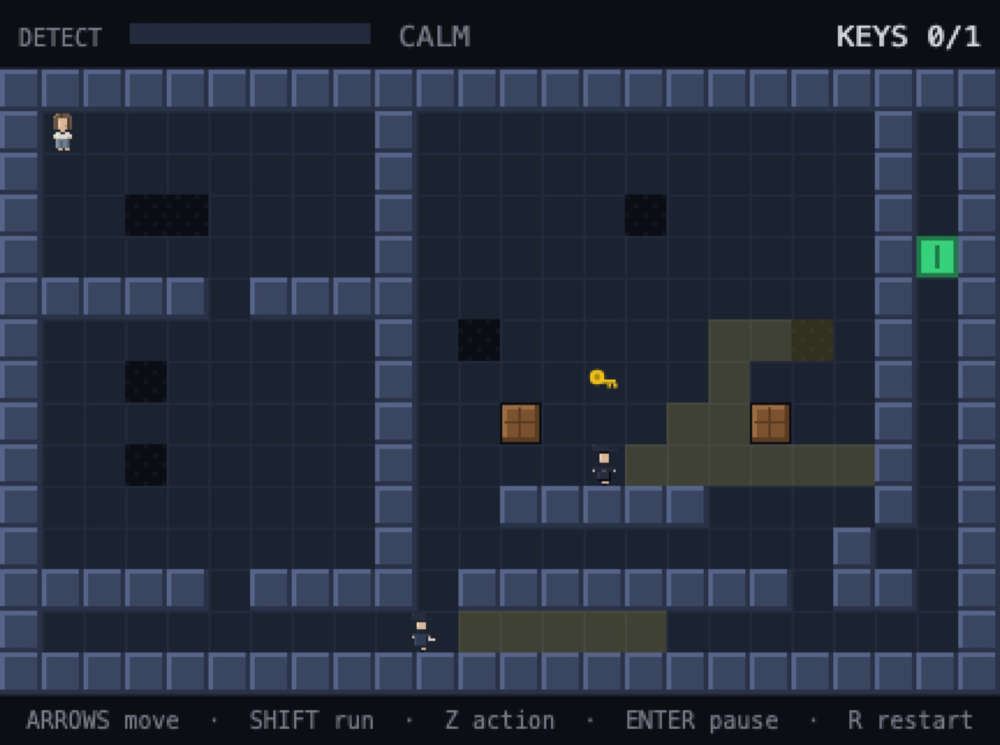
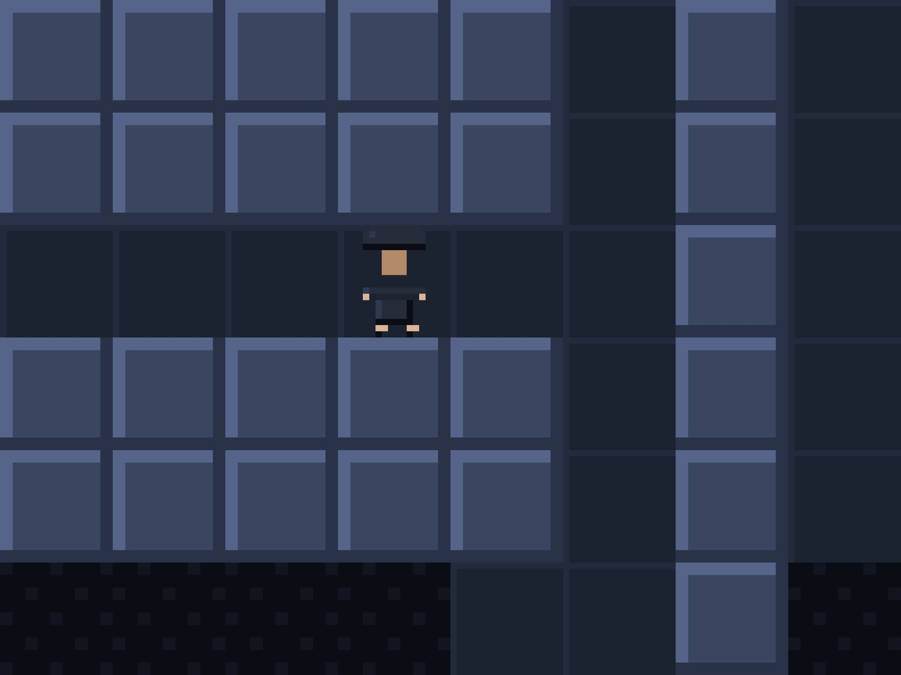

Calm
Finding · nothing to report
The patrol keeps its pattern; the corridor breathes in time. You are a rumour the building tells itself and doesn't believe.

They struck her from every register that ever held her name. For eleven weeks she was no one. Now it is dark, and the building she once kept is between her and the only proof she was ever real — three things with her name still on them, and a long corridor of light to cross to reach the first.
The book hands her to the dark — and stops at the fence, with her hand on the wire.
The novel walks Margaret Vane to the fence and stops there, with the lights of the building she used to run laid out below her like a circuit she drew. It does not follow her in. That is the night you play — the long crossing the book refuses to narrate, corridor by corridor, cone by cone, breath by held breath.
There is no fighting here — only what the light touches and what it doesn't. The guards see in hard wedges of it that swing and settle and sweep the floor ahead of them; step out of their reach into a patch of true shadow and their gaze passes straight through you, even with nothing between you but open air. The whole night is that single arithmetic — where the light is, where it isn't, and how long you can stand to wait in the dark for the wedge to move on.
What is seen is recorded. What is not seen did not happen.



Sound only ever sends a man to look; only being seen moves them up the ladder. Run and you're fast — and you leave a noise they'll come for. Sneak and you leave nothing at all.
Three acts, end to end — who she was, what they did to the record, and the night she came to take it back.
The desk where she decided what the country was allowed to see. Here she learns the building the way she once mapped it: every gap in the watch, drawn in her own hand.

She did the correct thing. She wrote it down. Watch a name come off the register one stamp at a time, until the last room that holds her is empty.
No more memory, no more record. Just the dark, the lights she aimed herself, and the one file she was never meant to read — on the far side of a man who still watches his door.


Somewhere in those rooms are three small, personal things — a set of prints, a photograph, a single leaf torn from a ledger — and each one she recovers puts a piece of her deletion back. The far door will not open until she has all three. And at the end of the last night stands the Director, who never left his post, who still watches his own door in the dark — the one man in the building who would know her if he turned around. The game never shows you whether he does.

A free, top-down stealth game in the same cold world as the novel — no combat, no install, no account. Just one woman, a building that forgot her on purpose, and a long walk through the light to take back the proof that she was real.
The night you just walked is the climax of a book — her whole story, from the desk to the fence. Read it free online, in full; now in paperback and e-book on Amazon.
Read the whole book, free →